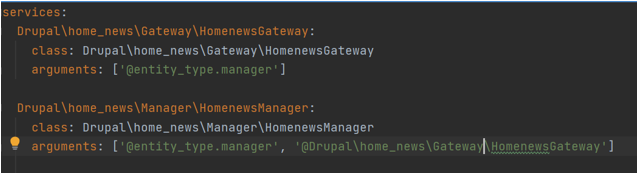
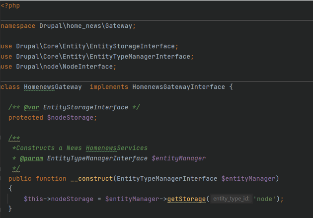
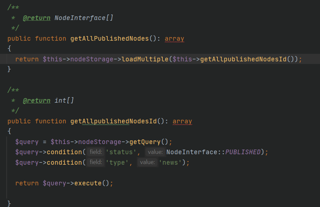
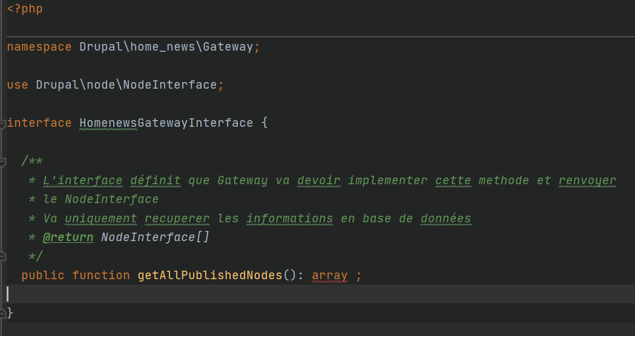
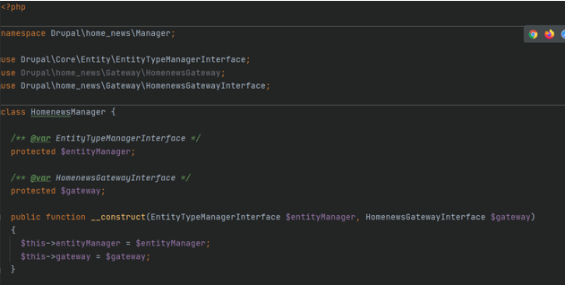
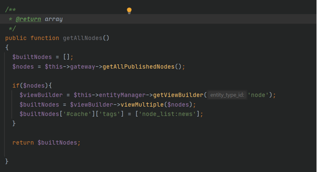
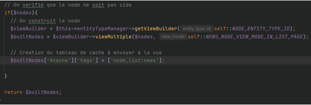
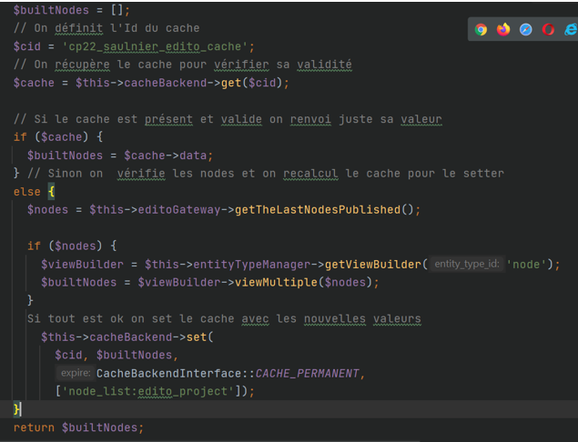
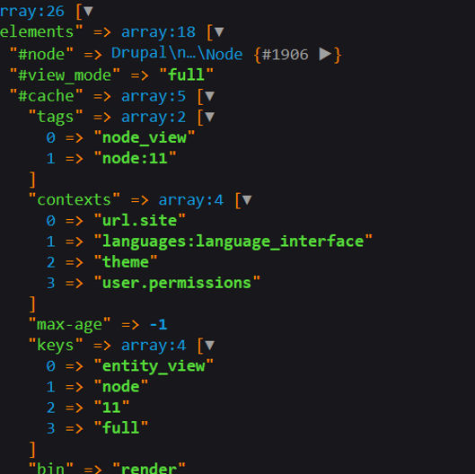
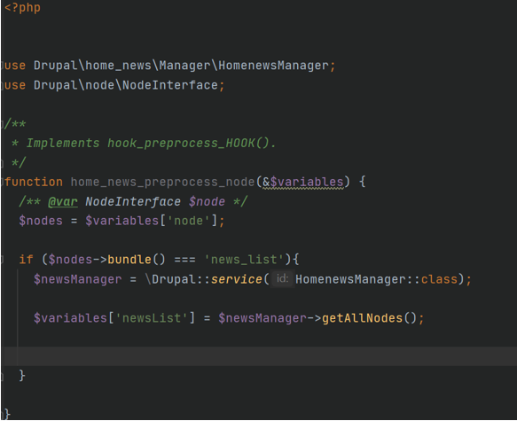

Le fichier d’injection de dépendances et déclaration des classes
Dans le service container on importe l’entity manager. Cela evite de faire une methode create dans le manager.
On déclare la classe et on lui ajoute les arguments (injections de dépendances)

Le gateway
On récupère les entités et leur contenus pour les faire transiter ensuite par le manager


La gateway interface
C’est un outil pour règlementer le fonctionnement de la gateway. On y déclare les méthodes à implémenter. C’est cette classe que l’on appelle par la suite pour utiliser la gateway. C'est comme une vitrine de la gateway.

Le manager
Dans le manager on va construire la logique de transit des données. Il sera appelé par tous les autres éléménts : plugin, module hook, field formatter... C'est le relai des données.


On y ajoute la création du cache
On peut définir les views modes que l’on veut utiliser dans la méthode view Multiple

Déclaration du cache
Ici on met en cache les nodes car ils sont lourds à charger.

Vérification du cache grâce à l'inspecteur dans l'onglet réseau ou avec le var_dump du node pour connaitre le cache qui est généré

Le fichier module Hook

L'affichage dans le template de la variable issue du module hook preprocess node